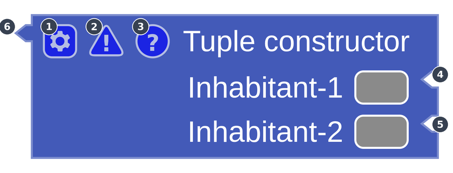
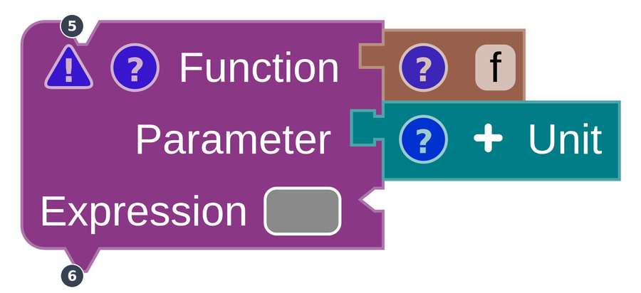
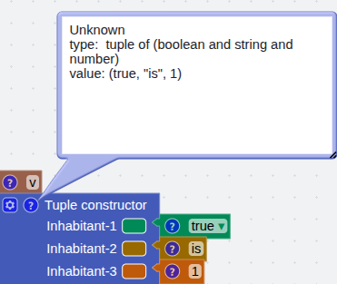
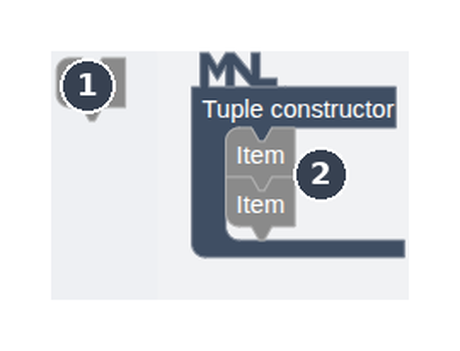
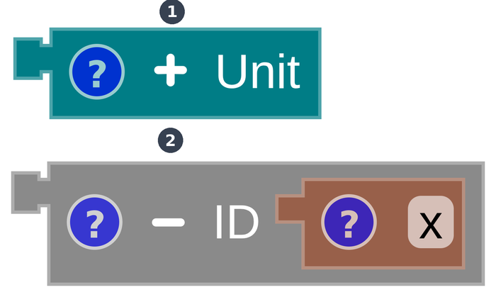

Reading a block
An MnL block is not just a container for text. Its shape tells you which part of the grammar it belongs to, its colour tells you the type of the value it produces, and the icons along its top edge give you its category, its value, and any error it is carrying.
The toolbox
The Blocks sidebar groups blocks by the grammar. Click a category to expand it; the number beside the name is how many blocks it holds. Ctrl+F jumps to Search blocks if you already know the name, and Ctrl+B hides the sidebar to give the workspace more room.
The first seven categories are the syntactic core. The seven below them are operations, and every one of those produces an expression.
| Category | Blocks |
|---|---|
| x Parameter 1 | Parameter |
| id Identity 1 | Identifier |
| ≡ Declarations 2 | Function, Variable |
| e Expression 6 | Application, Bound, Lambda, If / Else, Sequence, Let … in |
| ⟨⟩ Constructor 4 | List, Tuple, Record, Field |
| ⋔ Case & Match 8 | Case of, Match, Pattern Boolean, Pattern Character, Pattern Number, Pattern String, Pattern Unit, Pattern Any |
| c Constant 5 | String, Character, Boolean, Number, Unit |
| + Arithmetic 2 | Arithmetic, Compare |
| ∧ Logic 2 | And / Or, Not |
| str String 1 | Concatenate |
| ch Character 2 | Char → ASCII, ASCII → Char |
| :: List 4 | Head, Tail, Is empty, Append |
| π Tuple 1 | Get item |
| . Record 1 | Get field |
The toolbox was reorganised and the search box moved from the bottom of the toolbox to the top of the sidebar. Field joined the Constructor category, and the pattern blocks are now grouped with Case of and Match rather than sitting on their own.
Block anatomy
Every block carries the same furniture. Two layouts exist — one where inputs enter from the side, and one where they stack vertically with a horizontal input alongside.


| Part | Meaning |
|---|---|
1 ⚙ Gear |
Opens the add / remove input toolbox for blocks whose number of inputs can change. See below. |
2 ⚠ Warning |
The debugger. Shows what the block still needs, or the type error it is carrying. |
3? Info |
Shows the block’s category, type and value. See block info. |
| Suggestion box | The coloured stub on an empty input. Its colour is the type MnL expects there, so you can see what will fit before you drag anything. See type suggestion. |
4 5 Input notch |
The shape a block must have to attach here. |
6 Output notch |
The block’s own shape — the hook it offers to a parent block. |
Shape and colour
This is the part of MnL that does the most work for you, and it is worth learning deliberately.
- The shape of a notch stands for a non-terminal of the grammar. Two blocks fit together only when the grammar allows it, so an ill-formed program cannot be assembled in the first place.
- The colour of a block stands for the type of its value — blue for a function, yellow for a number, and so on. Colour is inferred, not declared, so it updates as you build.
From version 2 onwards MnL draws its blocks with a custom renderer called Kolintang. It uses horizontal-notch connector shapes to keep MnL’s syntactic categories visually apart: expressions, patterns, parameters, identifiers, types, matches and fields each get their own silhouette.
Because shape carries grammar and colour carries type, the two are independent: a green
Compare number block and a yellow number block share an expression silhouette but
announce different result types. The same pairing shows up in the
typing derivation, where a judgement separates the syntactic
category from the inferred type with ⊗.
Block info
Click the ? icon on a block to see what MnL knows about it: the block category taken from
the grammar, the term type, and the value.

Info is the fastest way to check your understanding against the language’s. If the type is not what you expected, the block you need to change is usually one of the children, not this one.
Add / remove input
Some blocks take a variable number of inputs — tuples, records, lists, sequences and case blocks among them. There are two ways to change the count.


The gear popup is the general mechanism; the plus and minus buttons are a shortcut for adding or removing one input at a time. Removing an input that still has a block attached detaches that block rather than deleting it — it is left loose on the workspace.
The debugger
The warning triangle is MnL’s debugger. It appears while a block is still incomplete or while it carries a type error, and it reports one of two things:
- What the block still needs to be complete — which inputs are empty.
- A term-type error — a child block whose type does not fit the input it is plugged into.
A complete block is one with every requirement satisfied; it loses its warning triangle. The
program as a whole is complete when the Types indicator in the status bar reads
OK. Until it does, the visualization views have nothing
to run.